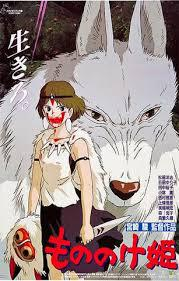
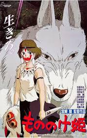
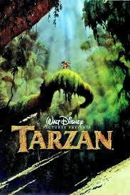
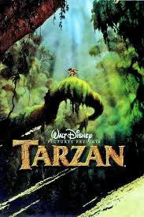
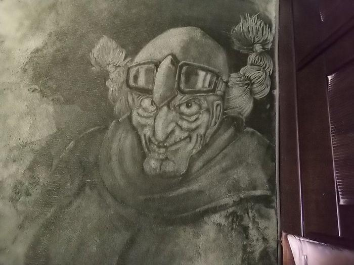
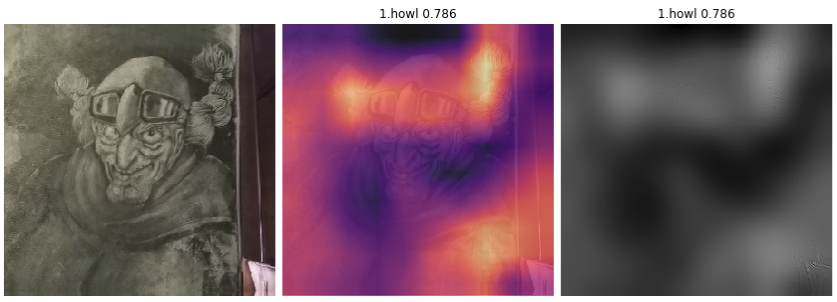

Build an image classification model from A to Z (with live demo)
Recently I decided to take a serious dive into computer vision and took Fast.ai new MOOC course (will be available in early 2019) which is built on top of Pytorch v1.0 (released on Oct 2018). If you are not familiar, Fastai library includes state-of-the-art deep learning technique out of the box which make it as easy to use as possible, whilst remaining easy to customize for researchers wanting to explore. To learn more about this new release, visit Fastai blog
As a result, I built a simple yet effective deep learning model to identify which of these 10 animated classic movies (4 from Ghibli Studios, 6 from Disney) a picture belongs to and publish it as a simple web application.


 



 

Index
Motivation
Creating a dataset
Splitting dataset into train/validation set
Choosing a deep learning architecture
Training model
Model interpretation using Grad-CAM and Guided Backprop
Improvements
1. Motivation
One of motivation I have for this project is that I watched lots of cartoon and animated movies when I was a kid and I always struggled to identify character from Disney movies, partly because most characters were illustrated by the same group of Disney animators (Glen Keane, Mark Henn), plots are somewhat similar to each other ... Or maybe it's just my lack of attention to details. The same goes to Ghibli Studio's characters, as all of movies I saw were illustrated by this legendary animator Hayao Miyazaki.
It would be interesting to train a deep learning model to distinguish characters between these movies.
2. Creating a dataset
a) From movie frames:
To make it more challenging, I only picked movies that are illustrated from same animator(s) for each studio since they will share similar art style. So from Disney I picked The Little Mermaid, Beauty and the Beast, Pocahontas, Tarzan, Mulan and Hercules. From Ghibli Studio my pick is Castle In The Sky, Howl's Moving Castle, Kiki's Delivery Service and Princess Mononoke (Due to time constraint and my focus on human characters, I left out few of Ghibli classics such as My Neighbor Totoro and Spirited Away. I do regret this decision, however)
My first thought on collecting these images is to use google-images-download. With this tool you can get 1000 images for each movie. This is a code example of getting 1000 medium-size images of Disney's Tarzan, save to 'data/temp' directory. You have to include the location of chromedriver.exe in order to download >100 images
!googleimagesdownload -k "disney tarzan" -s medium -l 1000 -o . -i data/temp -cd C:\\Users\\qtran\\chromedriver_win32\\chromedriver.exe
However, this approach of getting images from a search engine is the amount of duplicated and wrongly labeled images, thus requires a post-process step of manually deleting bad images. Also the library can only pull 500 images at a time for some reasons, so you have to call it several times, which results in more duplicated images. One way to avoid this is to specify time_min and time_max in the query
!googleimagesdownload -k "disney tarzan"" -s medium -l 1000 -o . -i data/temp -cd C:\\Users\\qtran\\chromedriver_win32\\chromedriver.exe -wr "{\"time_min\":\"01/01/2011\",\"time_max\":\"01/01/2015\"}"
A better way to collect high-quality images is to get them from the source itself: the movie frames. So I ended up renting DVD movies from the store and use VLC to collect the frames. This process is quite easy (guide) and there is even a command line to automate the task. You can specify the 'scene-ratio' to save an image every X number of frames. All of these animated movies play at 24 frame/second, so I set scene-ratio=48 to save an image every 2 seconds -> you will get roughly 3600 images for a 120-minute movie. Of course you can reduce scene-ratio to get more images. You can also specify image height and width to resize the frame to your liking.
Full VLC commane line can be found here
vlc.exe “C:\myvideo.mp4” --video-filter=scene --vout=dummy --scene-ratio=40 --scene-width=700 --scene-height=400 --scene-path=”C:\\SavedFrames” vlc://quit
Note: One warning about collecting movie frames is that some old movies can have weird and consistent artifacts. Thus if you are not careful, this will become a leak in your dataset.
For example, in Castle in the Sky movie there are thin black borders near the border of every frame, thus the model only focused on these lines to categorize this movie. A quick fix is to crop these images to get rid of those lines. (How I discover this leak with model visualization via Grad-CAM).
b) From the internet: 2D drawings, sketches and fanarts
After training model with images from movie sources, the model did a great job with almost 99% accuracy on validation set. However, after testing with some character drawings and sketches from internet, even though some of them look just like in the movie, the model fails to recognize them. This means our model is overfitting and does not generalize well. Also, when publishing this model as a web application, there will probably be more uploads of sketches and drawings than movie scenes (since it's fairly easier to just draw them) and these drawings will be different from movie scenes: black and white images or images with different facial details and even different art styles altogether. The only things that remain the same might be their specific and consistent features
(sketches and fanarts of Ariel in The Little Mermaid, Hades in Hercules, Kiki in Kiki's Delivery Service. If you are the author of one of these images, let me know so I can credit you)
We need our model to perform well on these images by fixing the overfitting problem. There are several ways: tune hyperparameters that controls regularization (dropout, weight decay ...), decrease number of epochs (early stopping) ... However, since we define our uses case of the web application is to do well not only on movie scene but sketches and drawings, the most straightforward solution is to make our training set similar to test set
To create a well-generalized training set, we will use google-images-download as described above but with different keyword: (movie name) + fanart and (movie name) + sketches + drawing. Since there are more duplicates in fanart and sketches, and to save time on cleaning bad images, we only search 400 to 500 images per movies. After cleaning, we expect to have ~300 images for each classes.
Few things we have to be careful when going with this approach: we need a good validation strategy, and we need to make sure those sketches and augmentation version of them vary, otherwise we will end up overfit on this data as well.
c) Upsample internet images
As mentioned before, for each class we would have 3600 images from movie source and only ~300 images from Google image search (after image cleaning) -> my dataset only contains 7% internet images, which is not good since test set and real life use cases might contain more of these images. One solution is to upsample them using data augmentation.
We use scikit-image library to generate 6 new images for each image taken from the internet.
- Grayscale
- Invert
- Add Poisson Noise
- Rescale intensity
- Log Adjust
- Sigmoid Adjust
If you want to see what effects the augmentation have on images + code, here is a nice Kaggle post
We now have 300*7 = 2100 internet images which is ~40% of our dataset. This should solve the imbalance dataset problem and help our training process.
3. Splitting dataset into train/validation set
Creating a reliable validation set is one of the most important thing in this project, and in any machine learning project in general. A simple random 80-20 split won't work all the time as you may unknowingly introduce leak in your dataset. I did try this random split to see how bad it can be, and well enough, the accuracy on validation reaches 99% but the model seems to only remember either minor details or background setup instead of the character itself.
Here is an example from Kiki's delivery service's movie scene. The protagonist is Kiki, a trainee witch and she is learning how to fly with her broom, so the main focus of these images should be her appearances, the broom, her bag or her black cat. If we randomly split the dataset, some of these images will be in train set and some will be in validation set, model will perform better. However it overfits by remembering background characters' details (their dresses) instead of main characters' and won't generalize well.
Training set:
Validation set and leak interpretation with Grad-CAM:
A quick fix is to include all these scenes in training set and pick a complete different scenes for validation set. We also need to monitor our training carefully. To learn more about creating a good validation set, you can visit this article by Rachel Thomas
For this project I hand-picked my own validation set to make sure there is no leak.
4. Choosing a deep learning architecture
There are several computer vision architectures out there such as ResNet, Xception, ResNeXt, DenseNet, SqueezeNet ... Since I am not aiming to beat state-of-the-art for this task, and I would prefer something I understand well for testing, I end up choosing ResNet. If you are not familiar, this Medium post discussed Resnet architecture in details. In short, ResNet model contains a bunch of conv block (resnet block) and identity block stacked on top of each other.
Conv block
Identity block
A simplified Resnet architecture
(Source: Coursera)
As seen in the illustration, after some number of convolutions, the final output is combined with the first convolutional output.
-
With this setup, Resnet block will automatically try to learn the difference between prior layer and the next layer, thus it will continuously improve the previous layer's answers by modeling how that layer differs from the next.
-
Plain neural networks don't work well in practice when we try to make it deeper due to vanishing gradients problem. The skip-connections in these blocks help solve this problem, thus we can have deeper Resnet architecture (Resnet34, Resnet50, Resnet101, Resnet152 ...)
-
In Visualizing the Loss Landscape of Neural Nets paper (from NeurIPS 2018), skip-connections in Resnet are proved to smoothen the loss landscape, thus help model training faster and easier
So Resnet seems to be a no brainer choice. I have tested with Resnet34 and Resnet 50, the latter proves to have better results. If you want to do more experiment with Resnet, there is an interesting article by David Page on how he tuned his Resnet architecture to achieve top position in Stanford DawnBench competition.
5. Training model with Fastai library
Fastai library makes it extremely easy to train and finetune an image classification model with transfer learning. Essentially you only need about 4 to 5 lines of code to have a reliable model. For more details, here are the steps:
- Set up image transformation (image augmentation)
This helps model avoid overfitting thus generalizes better. Few experiments with different transformations are made, however the default option (get_transforms()) seems to work best. Note that we already performed image transformations when we upsampled the dataset so I tried to avoid repeating the same type of transformations Fastai library used when upsampling. To see a list of Fastai transformations, visit Fastai doc
- Prepare data loader
We will use DataBunch container which holds training, validation, test data as well as information about image transformation, batch size and image size. We will use biggest possible batch size that can still fit in GPU, and we use image size of 300.
data=ImageDataBunch.from_folder(path,train='train',valid='valid',bs=78,size=300,ds_tfms = get_transforms()).normalize(imagenet_stats) learn = create_cnn(data,models.resnet50, metrics=accuracy)
To make training even better on GPU, we will use mixed precision. The idea is to do forward pass and gradient computation in 16-bits floats to reduce memory usage, and do weight update in 32-bits floats for precision. With mixed precision I can double my batch size from 40 to 80 on my GTX1080. Using Fastai library, this is all you need
learn = learn.to_fp16()
Stage 1: Finetune the last layer with 'one cycle' policy
We finetune the last layer and leave the rest untouched. This will help model 'warm up' and get reasonable weights before we train all the layers. We use Leslie Smith's 1cycle policy (you can take a look at this blog by Fastai researcher Sylvain Gugger). In short, this allows us to train the model quickly using high learning rates while reducing other forms of regularizations to an optimal balance point. This works in practice as Fastai team achieved top 3 positions in DawnBENCH competition (fastest training time on ImageNet) and countless other examples/projects mentioned in Fastai forums
learn.freeze() learn.fit_one_cycle(cyc_len=8,max_lr=8e-03) learn.save('stage1-300-8epochs')
We reached .928 accuracy with 8 epochs. That's not a bad result at all. Model is a bit overfitted.
Stage 2: Train every layers
After stage 1, we can save the weights and use it for stage 2 where we also finetune the lower layers in the architecture. We use discriminative learning rate (lower learning rate in lower layers) because lower layers are already good at detecting simple features such as lines, edges ... thanks to transfer learning, therefore we don't want to destroy them with high learning rate.
learn.unfreeze() learn.fit_one_cycle(5,max_lr=slice(8e-06,1e-3)) learn.save('stage2-300-5epochs')
Accuracy increased to .936
Increase image size and start all over
To improve model and avoid overfitting problem, we can increase the image size to 350 (aka progressive resizing). Model will now see better, more detailed images it has seen before, thus model will have to forget some of the details -> generalize better. We can perform stage 1 and stage 2 steps again. For this dataset, after progressive resizing, doing stage 2 does not seem to help anymore so we will stop at stage 1.
data=ImageDataBunch.from_folder(path,train='train',valid='valid',bs=52,size=350,ds_tfms = get_transforms()).normalize(imagenet_stats) learn = create_cnn(data,models.resnet50, metrics=accuracy) learn.load('stage2-300-5epochs') #stage 1 learn.freeze() learn.fit_one_cycle(8,max_lr=3e-03) learn.save('stage1-350-8epochs')
After training on ~45000 images for 21 epochs (~3.5 hours training on a single GTX1080), we reach .94 accuracy. Not bad for few days of work!
6. Model interpretation using Grad-CAM and Guided Backprop
While training our deep learning model, it is important to evaluate its predictions to make sure our training is done correctly and make improvements. There are several way to do this: plot confusion matrix and examine top mispredictions, determine which classes the model have trouble distinguishing, plot few example images and make educated guesses on what goes wrong... These steps are commonly used, but they might not truly reflect what the model knows. Sometimes we can have a wrong guess, make a wrong adjustment and have to start all over again (personally I have made this mistake so many times, not on this projects but many other ML projects in general).
Fortunately, there is Grad-CAM paper which proposed a technique for producing visual explanations from a large class of CNN-based models, making them more transparent. The idea is to use gradients of any target concept (layer) flowing into the final convolutional layer to highlight important regions in the image for predicting classes. And to isolate important regions, we can simply retain the positive contributions to the gradient while backpropagating (introduced in Striving for Simplicity: All Convolutional Net paper). This isolation step will be called 'guided backprop' in this blog post.
Grad-CAM and Guided backprop are not integrated in Fastai library but thanks to fastai.callbacks.Hooks which are built on top of PyTorch hooks and this discussion, the process of calculating gradient with respect to target layer becomes easier. In fact, I wrote some code and put them in a class so you can generate Grad-CAM + Guided backprop in just few line of code. (code / example)
# from a single Image object. img = open_image(path_to_image); gcam = GradCam.from_one_img(learn,img) gcam.plot()
Here is an example to show how model distinguishes between 2 different characters in a same image using Grad-CAM.
Note that my implementation is tight to Fastai library so you need to install Fastai library in your machine before using this)
img = open_image(img_path); gcam = GradCam.from_one_img(learn,img,label1='mulan',label2='pocahontas') gcam.plot(plot_hm=True,plot_gbp=False)
Debugging your model with GradCAM
Recognize odd details in your dataset
In Castle in the Sky movie there are thin black borders near the border of every frame. This details is subtle and hard to spot so I completely had no idea. Fortunately I discover this early while looking at Grad-CAM plot and notice my model focused , otherwise my model would be completely useless to classify this movie.
(from left to right: original image, Grad-CAM visual on top of original image, Guided backprop to isolate important regions)
Monitor model's performance
Back when my dataset only contains movie frames, I tried to see how it would perform on some images I found on the internet. Here is one of the image I used and the original image of a same character in Castle in the sky: Captain Dola

You can see a few challenges my model has to overcome: sketches are done in black and white and usually have more details (hair braids and wrinkles), facial expressions are not nearly the same ... Needless to say my model failed miserably. It focused too much on her hair and predicted the image as Howl's moving castle (another movie from the same studio) with 78.6% confidence, which is reasonable since Ghibli Studio loves to draw this type of hair braids on their characters.

(Left: Sophie from Howl’s Moving Castle, right: Sheeta in Castle in the Sky. They also have similar hair braids)
After adding sketches and augmentations to my dataset, retrain and then try again on this image, I can tell my model has improved. It predicts the label correctly with high confidence and it focused on her pilot goggles now, which is a huge improvement since this is her unique goggles (there are multiple scenes with her wearing them). Interestingly, the model did not focus on her face at all, even though IMO it's similar to the original image's.
(This is just one of many interesting examples I found over this dataset. I will try to post them if I can find them again)
Bonus: how good my model is with 3D rendered or live action images?
I constructed another validation set containing cosplays, 3D character rendered, collectible or live-action scenes from these 10 movies. The final accuracy is only ~70% with TTA but my model performs way better than I expect, considering this is a complete different data distribution. Here are some interesting find:
- You can clearly see how characters' unique features influence model predictions, e.g Pocahontas' necklace or Hercules' outfit ...
- It baffles me that in a lot of images, the model focuses on human faces to make correct predictions on an animated movie. There are some great cosplayers out there!
And this scene is just too iconic:
7. Improvements
Well that was a blast! This is my very first computer vision project where I combine all the knowledge I learn from different MOOCs and Kaggle kernels into one. Next stop for me would be to join an active Kaggle competition.
There are still rooms to improve performance for this classification task, such as
- When creating dataset from movie frames, sometimes I have to manually remove background images/images with characters drawn too small. It's better to design a classification model so we can automate this task
- Human performance can definitely achieve >94% accuracy (as these characters are fairly easy to distinguish). We can improve this model by
- Try other architecture such as Resnet101, ResNext, DenseNet
- Since our focus is movie characters, we can do object detection to crop them out
- Get more images. When constructing the dataset from movie frames, I record a frame after 2 seconds. You can get more images by setting to 1s or 0.5s. You can also enrich this dataset by including live action/ 3D rendered images the same way I include sketches/fanart 2D images.
Thank you for reading my first ever blog post on this page! If you want to discuss about this post, feel free to comment below or send me a tweet
Comments
Comments powered by Disqus